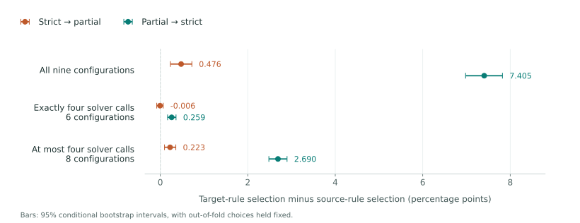

Central South University, China · Corresponding author: Xuechen Chen
A hard communication cap can interrupt an exchange after useful answers have been generated. Which method is preferable depends on what the system is allowed to deliver.
Method choice depends on delivery and the candidate set.
In a five-fold internal task holdout, we compare selecting a method under the target rule with selecting under the source rule. Both selected methods are evaluated under the target rule.

Accuracy differences in percentage points. Error bars are 95% conditional bootstrap intervals with out-of-fold choices held fixed. On small screens, the figure and table can be scrolled horizontally.
Held-out selection differences
Candidate set
Methods
Strict → partial
Partial → strict
All nine configurations
9
0.476 [0.232, 0.721]
7.405 [6.980, 7.823]
Exactly four solver calls
6
-0.006 [-0.082, 0.067]
0.259 [0.167, 0.359]
At most four solver calls
8
0.223 [0.096, 0.355]
2.690 [2.482, 2.898]
The context median is zero in both directions for all three candidate sets. These mean differences do not imply gains in every context. Negative and zero results are retained in the downloadable materials.
Same-data ranking comparison
Most best sets remain unchanged.
49 / 156
contexts have different best-configuration sets under strict abort and partial commit; 107 agree. This ranking comparison is separate from the held-out estimates above.
Across 20 additional task partitions, the partial-to-strict mean ranges from 6.582 to 7.438 points for all nine configurations, 0.118 to 0.442 for exactly four calls, and 2.584 to 2.928 for at most four.
Split ranges describe sensitivity to partitions of the same task pool, not population confidence intervals.
Completion-feasibility diagnostic
Training completion screening reduces the observed reverse mismatch.
Filtering the nine-method candidate set by minimum training completion leaves these partial-to-strict residuals:
Threshold
Residual, pp [95% CI]
Fallbacks
90%
0.090 [-0.012, 0.191]
35/780
95%
0.042 [-0.041, 0.128]
46/780
99%
0.417 [0.192, 0.651]
206/780
All three thresholds are retained. Eligible methods are ranked by training partial accuracy. If none qualify, maximum training completion is used before accuracy and identifier tie breaking.
This exploratory control uses training labels for selection; it is not a causal decomposition.
Under strict evaluation, target-rule-selected accuracy is 58.008% for exactly four calls, 65.442% for at most four, and 66.236% for all nine configurations. A smaller transfer difference does not imply higher absolute accuracy. The original prespecified rationale-sharing comparison remains inconclusive. These results concern the frozen task pool, protocol family and specified synthetic grid.
02
From derived metrics to reported comparisons.
The release includes the arrays, fold assignments and scripts needed for statistical refitting. No model API key or evaluator reference answers are required.
Python 3.12 · Run locally
Two complementary checks
Aggregate audit. The standard-library interface validates declared aggregate coverage and arithmetic, then reports 936 comparisons over 156 contexts. Its nine tests exercise interface behavior.
Statistical refitting. Install the pinned NumPy dependency, run eight boundary tests, refit the original selectors, and reconstruct the fixed-choice intervals. The supplied expected results are used only for comparison, never as script inputs.
Extract the download and run commands from its root. Use new output directories each time. The bundled statistics/README.md also documents all 20 alternate partitions.
audit_report/ Aggregate contract, inputs and comparisons
statistics/ Anonymous metrics, folds and refitting code
analysis_summary/ All declared thresholds and split results
heldout_summary/ Original held-out aggregate results
historical_aggregates/ Earlier aggregate and resource summaries
tools/ Figure and table generation
CITATION.cff Citation metadata
LICENSE_SCOPE.md Code and derived-material licenses
MANIFEST_SHA256.txt File integrity checksums
The download contains no benchmark question text, raw generated answers, evaluator references, original task identifiers, private reviews or correspondence. The manuscript and supplementary PDF are not included.
Interpretation boundary
MATH and MMLU-Pro receive equal weight; all failed deliveries remain in the denominator. Bootstrap intervals use 10,000 task-cluster resamples with fixed out-of-fold choices, without refitting or multiplicity adjustment. The contexts are dependent synthetic settings, not sampled deployments.
Derived metrics reproduce the supplied selection analyses. They do not independently validate the original reference grading, regenerate model responses, or reconstruct raw-message admission.
Attribution and reuse
Chenyu Ma, Xuechen Chen and Feng Wang (2026). Delivery Rules and Method Choice in LLM Collaboration under Hard Communication Budgets, reproducibility materials, version 2026.10.12.
Original code is MIT-licensed. Included derived data, documentation and figures are licensed under CC BY 4.0. See the license files in the download for scope and terms. Excluded third-party materials are not licensed by this release.